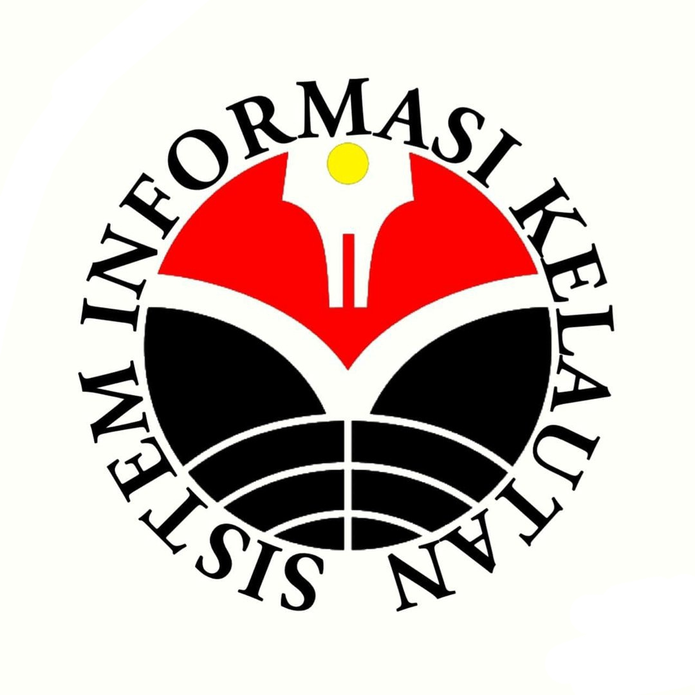

Sistem Informasi Kelautan
Kompetensi lulusan Program Studi Sistem Informasi Kelautan sebagai berikut :
1. Mampu mengidentifikasi, menganalisis, merumuskan, melaporkan dan merekomendasikan
masalah-masalah dan penyelesaian di bidang sistem informasi kelautan baik dalam
lingkup kegiatan maupun penerapan.
2. menguasai pengetahuan tentang teknologi komunikasi terkini dan aplikasinya untuk
mendukung wirausaha, reset dan meningkatkan kinerja.
3. menguasai teknologi informasi, pemodelan dan program kelautan, isntrumen di
kelautan, metode survey dan analis data, pengindraan jauh, sistem informasi
geografi, dan penulisan karya ilmiah.
4. menguasai bidang aplikasi kelautan, perikakan, oseanografi, meteorologi dan
klimatologi, serta metodologi penelitian.
| Tahapan |
Mata Kuliah Reguler |
| SEMESTER 4 |
| Pemrograman Web |
| Bisnis Intlegent |
| Jaringan |
| Aljabar Linear |
| Pengindraan Jauh |